|
|
| 当前位置：电脑报电子版 > 1999 年 > 28 期 > OA专刊 > 载歌载舞——在Authorware中加载MIDI背景音乐 |
| 《 载歌载舞——在Authorware中加载MIDI背景音乐 》 |
| 在多媒体应用程序中，MIDI音乐文件由于其存储容量远远小于波形声音文件，常常用作背景音乐。但由于Authorware中的声音图标不支持MIDI文件，所以，通过调用相应的多媒体扩展函数来实现音乐播放不失为一个好方法。 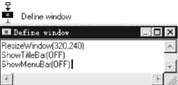 1．在流程线上放置一个“运算”图标，并命名为“Define Window”，设置如图1所示。 2．创建主界面图案。在流程线上放置一个“显示”设计按钮并命名为“Background”。双击打开，输入或创建相应的图片，如图2所示。 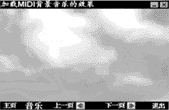 3．加载多媒体扩展函数，这些函数是Authorware提供对多媒体设备支持的自定义函数，均是与Microsoft的媒体控制界面（MCI）相联系的，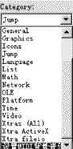MCI再直接与指定的多媒体硬件相联系，从而实现对多媒体设备进行控制。多媒体扩展函数放在一个DLL动态文件A4wmmeu32中，程序调用之前需加载这些函数。从菜单上选取“Window>Functions”选项或单击工具栏上“函数”按钮，进入“Functions”对话框。 4．从“Category”区的下拉列表中选定本文件选项,如图3所示（本实例文件名是“设置MIDI背景音乐a4p”），此时“Functions”对话框中下面的“Load”按钮变为可执行状态。 5．单击“Load”按钮，进入“Load Function”对话框。选定A4wmmeu32文件(该文件未随Authorware 4.0一起发行，可从其站点下载)，单击“打开”按钮，弹出如图4所示“Custom functions in A4wmmeu32”对话框。 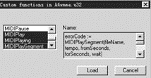6．用鼠标选取所有以MIDI开头的函数，单击“Load”加载，加载完毕后返回至与“Funtions”同名的另一个对话框，在函数的显示窗口增加了加载的多媒体扩展函数。至此，准备调用的多媒体扩展函数加载完毕。 7．在流程线上放置一“运算”图标，命名为“MIDI”，打开进入程序输入框，内容如图5所示。 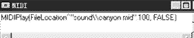 8．在流程线上放置一“交互作用”按钮，命名为“Control Panel”。 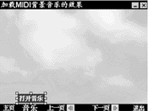9．在“Control Panel”的右侧放置一“映射”图标，弹出“Response Type”对话框，选定“Hot Spot”按钮，设置为热区响应，单击“OK”按钮，并将该图标命名为“打开音乐”。 10．用以上的方法，设置“关闭音乐”热区响应映射图标。 11．双击打开“Background”显示图标，按住Shift键，再双击打开“Control Panel”图标，在“Presentation Window”窗口中同时显示背景和热区的隐含状态，让“打开音乐”和“关闭音乐”图标的响应热区相同，并且覆盖工具条上的“音乐”位置。 12．双击“打开音乐”图标上面的交互按钮，进入“Properties:Response”对话框，在“Active If”区的正文输入框内输入“～MIDIplaying()”，但设置该图标的响应条件是当前的机器没有MIDI文件在播放。 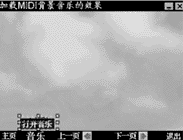13．用以上的方法，设置“关闭音乐”的响应，不同的是在“Active If”区的正文输入框内输入“MIDIplaying()”，且设置该图标的响应条件是有MIDI文件正在播放。 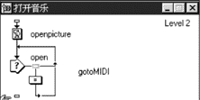14．双击“打开音乐”图标进入程序设计框。在流程线上放置一“显示”图标，命名为“openpicture”，双击打开“Background”显示图标，按住Shift键，再双击打开“openpicture”图标，“Presentation Window”窗口中会显示“Background”对象，创建显示对象，如图6所示。在流程线上放置一“交互作用”图标，命名为“open”，在其右侧放置一“运算”图标，设置为热区响应，命名为“gotoMIDI”，双击打开，输入内容如图7所示，双击打开“openpicture”，按住Shift键，再双击打开“open”，进入“Presentation Window”窗口，设置“gotoMIDI”响应区域为覆盖“openpicture”中的对象，如图8所示。整个“打开音乐”映射图标逻辑流程如图9所示。 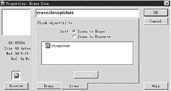15．双击“关闭音乐”映射图标，进入程序设计框。在其流程线上放置一“显示”图标，命名为“closepicture”，双击打开“Background”显示图标，按住Shift键，再双击打开“closepicture”图标，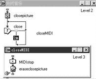“Presentation Window”窗口中会显示出“Background”对象，创建图片对象。然后在流程线上放置一“交互作用”图标，命名为“close”，在其右侧放置一“映射”图标，设置为热区响应，命名为“closeMIDI”，双击打开进入新的程序设计框，在其流程线上放置一“运算”图标，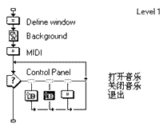命名为“MIDIstop”，双击打开进入程序输入框，输入MIDIstop()。执行该语句时将关闭正在播放的MIDI文件。在其下面的流程线上放置一“擦除”图标，命名为“eraseclose picture”，双击打开进入“Erase Icon”对话框，如图10所示，从“Presentation Window”窗口单击“closepicture”中图片对象，选定擦除对象，该图标的作用是在执行关闭音乐的功能后自动擦除弹出的“关闭音乐”菜单。整个“关闭音乐”映射图标的逻辑流程图如图11所示。 16．在“Control Panel”的右侧放置一“运算”图标，命名为“退出”，设置其响应的热区为覆盖工具条上的“退出”位置，双击打开进入程序输入框，输入quit()。 本实例程序逻辑流程(图12)。 至此，本实例制作完毕，让我们看看演示过程。单击“运行”按钮，开始出现的界面如图1所示，同时播放背景音乐，单击工具条上的“音乐”位置会弹出“关闭音乐”菜单，单击“关闭音乐”，音乐停止后，再单击工具条上的“音乐”位置，弹出“打开音乐”菜单，如图6所示，单击“打开音乐”，音乐开始播放，“打开音乐”菜单消失。还等什么，试一下吧。 （文/门槛工作室） |
| 下载本期推荐软件 | 页 首 |
| 《电脑报》版权所有，电脑报网站编辑部设计制作发布 |